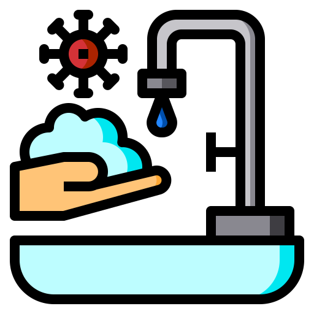
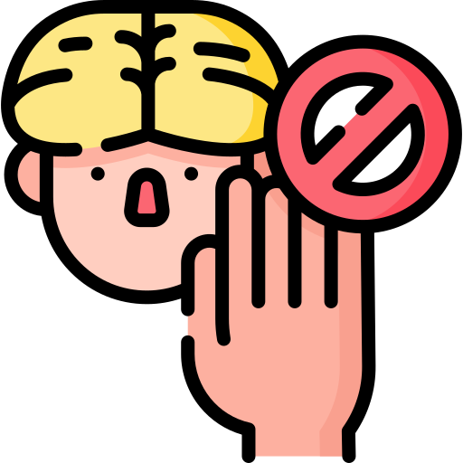
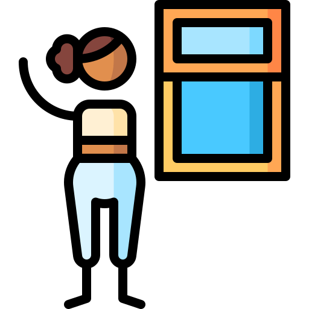
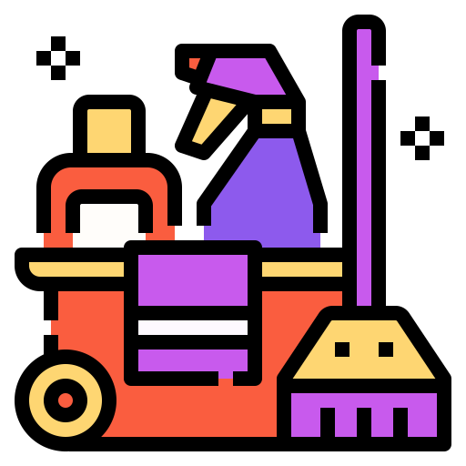

Cuidados
Lavarse las manos con jabón regularmente.
Estornudar en el pliegue del codo.
No llevarse las manos a los ojos, nariz ni boca.
Ventilar los ambientes.
Limpiar los objetos que se usan con frecuencia.
No compartir platos, vasos u otros artículos de uso personal.